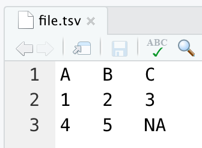

“The tidyverse provides several packages for importing data into R and this cheatsheet covers three of them.”
The cheatsheet
Access the cheatsheet here.
This cheatsheet covers importing data of various formats into RStudio. We’re going to show how this looks on your machine (with examples).
Below we install and load the packages:
install.packages(c("readr", "googlesheets4"))
library(readr)
library(googlesheets4)Data files
Below is an example of the data files used in this tutorial on macOS. We can see each file name and extension is associated with a different ‘Kind’ (or type).
You can download the data uses in this example here.
Data folder
We’ll assume each data file is located in a data/ folder
like the one printed below:
## data
## ├── f1.csv
## ├── f2.csv
## ├── f3.csv
## ├── file.csv
## ├── file.tsv
## ├── file.txt
## ├── file2.csv
## └── readxl
## └── readxl-data.xlsxPlain text files (readr)
There are four primary functions for importing delimited files:
read_delim(), read_csv(),
read_csv2(), and read_tsv().
readr‘s functions are designed to work with ’Text’ (or
‘plain text’) files. R comes ‘out of the box’ with other functions for
importing plain text files (but we won’t cover those in this
tutorial)
Delimited files
“Read files with any delimiter. If no delimiter is specified, it will automatically guess”
All readr functions will import data from a local file
or web URL. Below we use a the local data/ folder
for the file.txt data, which has the following
structure:
Import the data in "data/file.txt" below:
readr::read_delim(file = ____)readr::read_delim(file = "data/file.txt")Import the data from "https://bit.ly/file-dot-txt"
below:
readr::read_delim(file = ____)readr::read_delim(file = "https://bit.ly/file-dot-txt")These are sometimes called pipe-delimited
flat files, and their extension is usually .txt or
.dat.
As we can see, if we do not specify a delim = argument,
read_delim() will guess based on the contents of
data/file.txt.
Provide the delim = "|" argument for fun (just remember
to include it in quotes):
readr::read_delim(file = "data/file.txt", delim = ___)readr::read_delim(file = "data/file.txt", delim = "|")As we can see, we get the same result as the image above.
Comma-separated values files (period decimals)
“Read a comma delimited file with period decimal marks”
The read_csv() function will import a comma-separated
values (csv) file, like the one we have in
data/file.csv:
We’ve added a few decimal point values for demonstration purposes.
The URL for file.csv is below:
https://bit.ly/file-dot-csvPlace either the local path (data/file.csv) or the URL
in the file = argument and click ‘Run Code’ to see the
imported file:
readr::read_csv(file = ____)readr::read_csv(file = "https://bit.ly/file-dot-csv")
# identical to:
# read_csv(file = "data/file.csv")Semicolon-separated values files (comma decimals)
“Read semicolon delimited files with comma decimal marks.”
Some datasets (like those from Sweden or Germany), will use commas
for decimals (i.e. 0.5 = 0,5) and semicolons
as a delimiter (instead of pipes, tabs, or commas).
We have an example in data/file2.csv:
To import these files, use the read_csv2() function.
The URL for the file2.csv is below:
https://bit.ly/file2-dot-csvPlace the URL in the file = argument and click ‘Run
Code’ to see the imported file:
readr::read_csv2(file = ____)readr::read_csv2(file = "https://bit.ly/file2-dot-csv")
# identical to:
# read_csv2(file = "data/file2.csv")As we can see, readr tells us what was used as a
decimal (as well as the grouping mark) and the
delimiter.
Tab-separated values files
“Read a tab delimited file.”
Tab-separated files are similar to comma-separated value files, except instead of using commas to delimit each value, they use tabs. In a text editor, these files appear to have white space between the values:

You might be wondering how readr can differentiate the
white space between values on the same line and the white space
between rows?
The white space between values contains a special character used to identify tabs:
\tThis is different from the special character used to identify a new row (or Newline), which is
\n
The URL for file.tsv is below.
https://bit.ly/file-tsvPlace the URL in the file = argument and click ‘Run
Code’ to see the imported file:
readr::read_tsv(file = ____)# identical to:
# readr::read_tsv(file = "data/file.tsv")
readr::read_tsv(file = "https://bit.ly/file-tsv")Knowing these two special characters comes in handy if we want to
manually type the contents of a text file directly into any
read_*() functions.
Try it below:
# copy the lines below:
A\tB\tC\n1.5\t2\t3\n4.5\t5\tNA# paste the data between the quotes in read_delim()
readr::read_delim(file = "paste here")readr::read_delim(file = "A\tB\tC\n1.5\t2\t3\n4.5\t5\tNA")Delimited files (notes)
A few things to note when importing ‘Text’ files with
readr:
- All data imported with
readrfunctions are imported as atibble.
readrgives us a lot of information whenever it imports a file (see below):
- Depending on which function you use, this will include the delimiter, decimal, column names, dimensions and column specifications (which we will cover in the next sections).
readr import arguments
In this section we’ll cover some additional arguments to give you more control over your imported datasets.
Column names (Headers)
“No header.”
If your dataset doesn’t have column names, you can omit these with
col_names = FALSE.
Remove the column names and click ‘Run Code’ to see the imported file:
readr::read_csv(file = "data/file.csv",
col_names = ____)readr::read_csv(file = "data/file.csv",
col_names = FALSE)The default behavior is to name these columns X1,
X2, X3, etc. However, you can also specify the
column names as a string vector (i.e.,
c("x", "y", "z"))
“Provide header.”
Change the column names from A, B,
C to x, y, z and
click ‘Run Code’ to see the imported file:
readr::read_csv(file = "data/file.csv",
col_names = ____)readr::read_csv(file = "data/file.csv",
col_names = c("x", "y", "z"))Skip lines
If there are lines we’d like to omit from our data file, we can use
the skip argument and give a number of the lines we’d like
to exclude.
Skip the first line and click ‘Run Code’ to see the imported file:
readr::read_csv(file = "data/file.csv", skip = ____)readr::read_csv(file = "data/file.csv", skip = 1)Import multiple files
“Read multiple files into a single table.”
We can also import multiple .csv files using a single call to
read_csv(). Simply combine the names of the files in the
file argument (in this case, it’s three URLs.). We also
supply an id argument, which will allow us to identify the
original data file.
Name the id variable file (in quotes) and
click ‘Run Code’ to see the imported files.
readr::read_csv(file = c("data/f1.csv", "data/f2.csv",
"data/f3.csv"), id = ' ')readr::read_csv(file = c("data/f1.csv", "data/f2.csv",
"data/f3.csv"), id = 'file')Control imported rows
“Read a subset of lines.”
If we have a large dataset and would like to control the number of
imported rows, we can use the n_max argument to set the
maximum number of lines to read:
Set the maximum number of rows to 2 and click ‘Run Code’
to see the imported file.
readr::read_csv(file = "data/file.csv", n_max = ____)readr::read_csv(file = "data/file.csv", n_max = 2)Set missing values
“Read values as missing.”
We can also specify the values we’d like to set as ‘missing’. By
default, R detects NA as missing, but we can set this to
whatever we want with the na argument (note that this needs
to be a string).
Set the missing values to 1 (as a string) and click ‘Run
Code’ to see the imported file.
readr::read_csv(file = "data/file.csv", na = )readr::read_csv(file = "data/file.csv", na = "1")Control formatting
“Specify decimal marks.”
Data conventions vary from place to place (as we saw before with the
file2.csv example above). The locale argument
gives us the ability to change the time zone, encoding, decimal mark,
day/month names and more.
The syntax is a little tricky–you’ll actually use the
local argument with the locale() function,
like so:
locale = locale(decimal_mark = ",")Set the decimal mark to , below:
readr::read_delim(file = "data/file2.csv",
locale = locale(decimal_mark = ____))readr::read_delim(file = "data/file2.csv",
locale = locale(decimal_mark = ","))As we can see, the commas have been treated as decimals.
readr column specification
As we’ve seen, readr display a lot of useful information
on imported files. However, there is even more information in contained
in the column specifications, or spec. We can also tell
reader how to format the columns we’re importing.
Extract column specification
“Extract the full column specification for the given imported data frame.”
We can extract the column specifications using the
spec() argument on the imported data file.
file <- readr::read_delim(file = "age\tsex\tearn\n25\tM\t85.5\n32\tF\t92.75")
file# pass the 'file' to spec()
spec(x = ____)# pass the 'file' to spec()
spec(x = file)Hide column specification
“Hide col spec message.”
If we don’t want to see the output from the column specification, we
can hide this using the show_col_types = argument:
Hide the column specifications using show_col_types and
click ‘Run Code’ to see the imported file.
readr::read_csv(file = "data/file.csv", show_col_types = ____)readr::read_csv(file = "data/file.csv", show_col_types = FALSE)Select columns to import
“Use names, position, or selection helpers.”
Import only the A and C columns (as
c(A, C)) using the col_select argument and
click ‘Run Code’ to see the imported file.
readr::read_csv(file = "data/file.csv",
col_select = ____)readr::read_csv(file = "data/file.csv",
col_select = c(A, C))Importing data in the Environment pane
We can also import plain text files by clicking Import Dataset in the Environment pane (see below:)
Most of these options are available from the data import GUI in the
Environment pane. After clicking on Import
Dataset, you’ll select From Text (readr). Click on
Browse and navigate to a plain text file (the
file.csv is show below as an example):
You’ll see a preview of the data file in the Data Preview section, with each column name and format. I’ve indicated the options we’ve covered in the Import Options section:
Next to the Import Options there is a Code Preview section that will create the code needed to import what you see in the Data Preview section.
Changes to the Import Options will cause changes in the Code Preview. Below I change the Skip, First Row as Names, and Open Data Viewer options:
And we can see the corresponding changes to the Code Preview section:
Using the GUI is a helpful tool for learning how the R code works for importing code!
Saving data with readr
To export data with readr, we can use any of the
corresponding write_*() functions. Each of these take an
object in the current environment (x) and the desired
file path (including the file extension).
We’re going to use the handy fs::dir_tree()
function to verify the file exported correctly.
fs
(‘Filesystem’) is a great package full of useful functions for
manipulating and displaying folder and file information.
“Write files with any delimiter.”
Read data/file.txt into file_txt, export as
processed-data/file_txt.txt (with "|" as a
delimiter).
# read from data/
file_txt <- readr::read_delim(file = "")
# export to from processed-data/
write_delim(file_txt, file = "", delim = " ")
# verify with fs::dir_tree("processed-data")
fs::dir_tree("")# read from data/
file_txt <- readr::read_delim(file = "data/file.txt")
# export to from processed-data/
write_delim(file_txt,
file = "processed-data/file_txt.txt", delim = "|")
# verify with fs::dir_tree("processed-data")
fs::dir_tree("processed-data")“Write a comma delimited file.”
Read data/file.csv into file_csv, export as
processed-data/file_csv.csv
# read from data/
file_csv <- readr::read_csv(file = "")
# export to from processed-data/
write_csv(x = file_csv, file = "")
# verify with fs::dir_tree("processed-data")
fs::dir_tree("")# read from data/
file_csv <- readr::read_csv(file = "data/file.csv")
# export to from processed-data/
write_csv(x = file_csv, file = "processed-data/file_csv.csv")
# verify with fs::dir_tree("processed-data")
fs::dir_tree("processed-data")“Write a semicolon delimited file.”
Read data/file2.csv into file2_csv, export
as processed-data/file2_csv.csv
# read from data/
file2_csv <- readr::read_csv2(file = "")
# export to from processed-data/
write_csv2(x = file2_csv, file = "")
# verify with fs::dir_tree("processed-data")
fs::dir_tree("")# read from data/
file2_csv <- readr::read_csv2(file = "data/file2.csv")
# export to from processed-data/
write_csv2(x = file2_csv, file = "processed-data/file2_csv.csv")
# verify with fs::dir_tree("processed-data")
fs::dir_tree("processed-data")“Write a tab delimited file.”
Read data/file.tsv into file_tsv, export as
processed-data/file_tsv.tsv
# read from data/
file_tsv <- readr::read_tsv(file = " ")
# export to from processed-data/
write_tsv(x = file_tsv, file = " ")
# verify with fs::dir_tree("processed-data")
fs::dir_tree("")# read from data/
file_tsv <- readr::read_tsv(file = "data/file.tsv")
# export to from processed-data/
write_tsv(x = file_tsv, file = "processed-data/file_tsv.tsv")
# verify with fs::dir_tree("processed-data")
fs::dir_tree("processed-data/")There you have it! Exporting data with readr is very
similar to importing data.
Excel files with readxl
Microsoft Excel files are commonly used for data entry and storage.
Despite being a proprietary format, we’re able to import these files
using the readxl package. Our excel file has the following
contents:
We’ll proceed as though they’ve been downloaded into a local
data/readxl/ folder.
Read files
readxl comes with three functions for reading Excel
files: read_excel(), read_xls(), and
read_xlxs()
Print sheets
“Get a vector of sheet names.”
The best place to start is with excel_sheets(), which
tells us the names of the sheets in an Excel file.
Place the path to the readxl-data.xlsx file
("data/readxl/readxl-data.xlsx") in the path
argument and click ‘Run Code’:
readxl::excel_sheets(path = ____)readxl::excel_sheets(path = "data/readxl/readxl-data.xlsx")We can see this file has three sheets: "f1.csv",
"f2.csv", "f3.csv"
Read sheets
“Specify which sheet to read by position or name.”
If we want to import a sheet from the readxl-data.xlsx
file, we can use the read_excel() function and specify the
sheet name or position with the sheet argument.
Position is numeric, with 1 being the first sheet. Enter
1 in the code block below:
readxl::read_excel(path = "data/readxl/readxl-data.xlsx",
sheet = ____)readxl::read_excel(path = "data/readxl/readxl-data.xlsx",
sheet = 1)If we want to use the name of the sheet, we must supply this as a
string (in quotes). Import only the "f1.csv" sheet in the
code chunk below:
read_excel(path = "data/readxl/readxl-data.xlsx",
sheet = ____)read_excel(path = "data/readxl/readxl-data.xlsx",
sheet = "f1.csv")Just like the output from excel_sheets() above!
Read multiple sheets
If we want to import all the sheets in readxl-data, we
can combine excel_sheets() with read_excel()
with map_dfr()
from the purrr
package.
- Get a vector of sheet names from the file path.
- Set the vector names to be the sheet names.
- Use
purrr::map_dfr()to read multiple files into one data frame.
I’ll go into slightly more detail about what the code below is doing:
- We assign the local path to a character string,
path
path <- "data/readxl/readxl-data.xlsx"- We then pipe
pathtoexcel_sheets(), and we know what this output will be from the step above ("f1.csv","f2.csv","f3.csv")
path |>
readxl::excel_sheets()- The
purrr::set_names()names each item inpath, turning it into this:f1.csv = "f1.csv",f2.csv = "f2.csv",f3.csv = "f3.csv"
path |>
readxl::excel_sheets() |>
purrr::set_names()- We then passed this named vector to the
.xargument in themap_dfr()function, and we passread_excel()to the.fargument
path |>
readxl::excel_sheets() |>
purrr::set_names() |>
purrr::map_dfr(.x = ., .f = read_excel)- The
read_excel()function has apathargument, and we will pass the originalpathvector (where the file is located)
path |>
readxl::excel_sheets() |>
purrr::set_names() |>
purrr::map_dfr(.x = ., .f = read_excel, path = path)In the code block below,
Assign the readxl-data.xlsx to path and
import all of the sheets.
____ <- "data/readxl/readxl-data.xlsx"
path %>%
readxl::excel_sheets() %>%
purrr::set_names() %>%
purrr::map_dfr(.x = ., .f = read_excel, path = path)path <- "data/readxl/readxl-data.xlsx"
path %>%
readxl::excel_sheets() %>%
purrr::set_names() %>%
purrr::map_dfr(.x = ., .f = read_excel, path = path)The map_dfr() function stands for “map data frame,
row-bind”, which means all the data have been ‘stacked’ into a long data
format.
This is identical to (click Run Code):
# import sheets
f1 <- read_excel(path = "data/readxl/readxl-data.xlsx",
sheet = 1)
f2 <- read_excel(path = "data/readxl/readxl-data.xlsx",
sheet = 2)
f3 <- read_excel(path = "data/readxl/readxl-data.xlsx",
sheet = 3)
# bind together
bind_rows(f1, f2, f3)Obviously we’d want to use the map_dfr() function to
avoid a lot of copying and pasting. You can read more about Excel
workflows on the readxl
website.
Column specification
“Column specifications define what data type each column of a file will be imported as.”
The options for col_types are:
"skip"
"guess"= default
logical
numeric
text
date
list
Specify the column types with the col_types argument
("text") in the f1.csv sheet.
read_excel(path = "data/readxl/readxl-data.xlsx",
sheet = " ", col_types = " ")read_excel(path = "data/readxl/readxl-data.xlsx",
sheet = "f1.csv", col_types = "text")When providing column types, you must either 1) enter nothing (in
which case readxl will guess the column type based on the
contents), 2) enter a single column type for all columns (like we did
above with "text"), or 3) enter one column type for each
column in the data file.
I’ve included the data types for each option of the
col_types argument below:
Export data with writexl
If we have a dataset in our R environment we want to write to an
Excel sheet, we can do this with either writexl. The
writexl package is lightweight and only has a single
function for writing data frames to excel,
write_xlsx().
If you have a multiple data frames you’d like to export into an excel file with multiple sheets, you’ll need to store these in a named list of data frames.
In the code block below:
Create excel_data with readxl and
purrr, but instead of using purrr’s
map_dfr(), we use purrr::map() (because it
returns a list)
____ <- "data/readxl/readxl-data.xlsx"
excel_data <- path %>%
excel_sheets() %>%
purrr::set_names() %>%
purrr::map(.x = ., .f = read_excel, path = path)
excel_datapath <- "data/readxl/readxl-data.xlsx"
excel_data <- path %>%
excel_sheets() %>%
purrr::set_names() %>%
purrr::map(.x = ., .f = read_excel, path = path)
excel_dataIn the code block below:
- Create a directory for the output from
writexlin ourdata/folder withfs::dir_create()
- Export the
excel_datalist directly to this path (it’s already a named list)
- Verify the data have been exported with
fs::dir_tree("data")
# create data/writexl/ folder
fs::____("data/writexl/")
# export 'excel_data' as 'excel_data.xlsx'
write_xlsx(x = ____,
path = "data/writexl/excel_data.xlsx")
# verify
fs::____("data")# create data/writexl/ folder
fs::dir_create("data/writexl/")
# export 'excel_data' as 'excel_data.xlsx'
write_xlsx(x = excel_data,
path = "data/writexl/excel_data.xlsx")
# verify
fs::dir_tree("data")This gives us the following excel_data.xlsx file:
Export data with openxlsx
Another option is the openxlsx
package, which requires more code but has more options.
openxlsx export workflow
- First we create an Excel workbook with
openxlsx::createWorkbook()
wb <- openxlsx::createWorkbook()- Second, we create a worksheet (with a name) using
openxlsx::addWorksheet()
openxlsx::addWorksheet(wb = wrkbk, sheetName = "my-sheet")- Third, we write the R data object to the sheet(s) (with any
formatting options) using
openxlsx::writeDataTable()
openxlsx::writeDataTable(wb = wrkbk,
sheet = "my-sheet",
x = data)- Finally, we save the .xlsx file using
openxlsx::saveWorkbook()
openxlsx::saveWorkbook(wb = wrkbk,
file = "data.xlsx",
overwrite = TRUE)In the code block below:
- Create the
data/openxlsx/withfs::dir_create()
- Create an excel
workbookwithopenxlsx::createWorkbook()
- Create three sheets in
workbook
"file-01.csv"
"file-02.csv"
"file-03.csv"
- Write the data in the
excel_datalist to the appropriate sheet using the$syntax to subset (i.e.,excel_data$f1.csv,excel_data$f2.csv, etc.)
- Save the
workbookto"data/openxlsx/openxlsx-output.xlsx"usingopenxlsx::saveWorkbook()
- Verify with
fs::dir_tree("data/")
# create folder for output
fs::____("data/openxlsx/")
# create workbook
workbook <- openxlsx::____()
# add worksheets
openxlsx::____(wb = workbook, sheetName = "file-01.csv")
openxlsx::____(wb = workbook, sheetName = "file-02.csv")
openxlsx::____(wb = workbook, sheetName = "file-03.csv")
# write data frames to sheets
openxlsx::____(wb = workbook,
sheet = "file-01.csv",
x = excel_data$____)
openxlsx::____(wb = workbook,
sheet = "file-02.csv",
x = excel_data$____)
openxlsx::____(wb = workbook,
sheet = "file-03.csv",
x = excel_data$____)
# save workbook
openxlsx::____(wb = workbook,
file = "data/openxlsx/openxlsx-output.xlsx",
overwrite = TRUE)
# verify
fs::____("data/")# create folder for output
fs::dir_create("data/openxlsx/")
# create workbook
workbook <- openxlsx::createWorkbook()
# add worksheets
openxlsx::addWorksheet(wb = workbook, sheetName = "file-01.csv")
openxlsx::addWorksheet(wb = workbook, sheetName = "file-02.csv")
openxlsx::addWorksheet(wb = workbook, sheetName = "file-03.csv")
# write data frames to sheets
openxlsx::writeDataTable(wb = workbook,
sheet = "file-01.csv",
x = excel_data$f1.csv)
openxlsx::writeDataTable(wb = workbook,
sheet = "file-02.csv",
x = excel_data$f2.csv)
openxlsx::writeDataTable(wb = workbook,
sheet = "file-03.csv",
x = excel_data$f3.csv)
# save workbook
openxlsx::saveWorkbook(wb = workbook,
file = "data/openxlsx/openxlsx-output.xlsx",
overwrite = TRUE)
# verify
fs::dir_tree("data/")This gives us the following file:
You can read more about these options on the openxlsx
website.
Import data with googlesheets4
Another common storage format for data is in Google sheets, which are similar to Microsoft Excel, but built to work within your web browser.
We can import data from these files using the googlesheets4
package.
Authenticate
If you have a Google account, you can authenticate the your account
using the gs4_auth()
function.
googlesheets4::gs4_auth()
Is it OK to cache OAuth access credentials in the folder ~/Library/Caches/gargle between R sessions?
1: Yes
2: NoEnter 1 and you’ll be taken to your web browser, asked
sign in and/or to approve the authentication, then you’ll see this
message when it’s complete:
Authentication complete. Please close this page and return to R.
Read sheets
I’ve stored the data from the previous sections in a Google sheet available at this link.
The link for these data is also available is below:
https://docs.google.com/spreadsheets/d/1jOmVxBfJesO7NRYyiT1Ox6k6hGTNX0DRm1ZzAZU2sEQ/edit?usp=sharingThe function for importing data from Google Sheets is
googlesheets4::range_read().
In the code block below:
Copy the link above and paste it (in quotes) into the
googlesheets4::range_read()function belowEnter the name of the
sheetas"file-01.csv"
We will also include the gs4_deauth() function,
because this sheet is public and doesn’t require
authentication.
# de-authenticate
googlesheets4::gs4_deauth()
googlesheets4::range_read(
ss = ____,
sheet = ____
)# de-authenticate
googlesheets4::gs4_deauth()
googlesheets4::range_read(
ss = "https://docs.google.com/spreadsheets/d/1jOmVxBfJesO7NRYyiT1Ox6k6hGTNX0DRm1ZzAZU2sEQ/edit?usp=sharing",
sheet = "file-01.csv"
)googlesheets4 also has many of the same arguments as the
readxl and readr packages. For example, we can
specify a range of cells from a given sheet.
In the code block below:
- Change the
rangeargument to"file-02.csv!A1:B4"
googlesheets4::range_read(
ss = "https://docs.google.com/spreadsheets/d/1jOmVxBfJesO7NRYyiT1Ox6k6hGTNX0DRm1ZzAZU2sEQ/edit?usp=sharing",
range = ____)googlesheets4::range_read(
ss = "https://docs.google.com/spreadsheets/d/1jOmVxBfJesO7NRYyiT1Ox6k6hGTNX0DRm1ZzAZU2sEQ/edit?usp=sharing",
range = "file-02.csv!A1:B4")Column specifications
We can also specify the column types, but with slightly different
syntax from readxl and readr:
Options for column formats are below:
- skip -
"_"or"-"
- guess -
"?"
- logical -
"l"
- integer -
"i"
- double -
"d"
- numeric -
"n"
- date -
"D"
- datetime -
"T"
- character -
"c"
- list-column -
"L"
- cell -
"C"Returns list of raw cell data.
Below are some examples of column formats and their
col_type code in googlesheets4:
In the code block below:
- Return the contents of the
"file-03.csv"sheet as character:
googlesheets4::range_read(
ss = "https://docs.google.com/spreadsheets/d/1jOmVxBfJesO7NRYyiT1Ox6k6hGTNX0DRm1ZzAZU2sEQ/edit?usp=sharing",
sheet = ____,
col_types = ____
)googlesheets4::range_read(
ss = "https://docs.google.com/spreadsheets/d/1jOmVxBfJesO7NRYyiT1Ox6k6hGTNX0DRm1ZzAZU2sEQ/edit?usp=sharing",
sheet = "file-03.csv",
col_types = "c"
)Metadata
If we’d like to know the metadata (data about the data) in a Google
Sheet, we can use the gs4_get() function.
Below is the link to the googlesheet:
https://docs.google.com/spreadsheets/d/1jOmVxBfJesO7NRYyiT1Ox6k6hGTNX0DRm1ZzAZU2sEQ/edit?usp=sharingPass the URL from the sheet above to ss argument in
googlesheets4::gs4_get() below:
googlesheets4::gs4_get(ss = ____)googlesheets4::gs4_get(ss = "https://docs.google.com/spreadsheets/d/1jOmVxBfJesO7NRYyiT1Ox6k6hGTNX0DRm1ZzAZU2sEQ/edit?usp=sharing")If you use Google sheets regularly and other Google tools, check out
the googledrive
package for managing Google files.
Conclusion
We’ve covered three of the most common methods for importing data into RStudio:
1. readr for plain text files
2. readxl for Microsoft Excel files
3. googlesheets4 for reading Google Sheets
We also covered how to export data with writexl and
openxlsx.
All of the information in this tutorial is in the data import cheatsheet from RStudio, which you can access here.